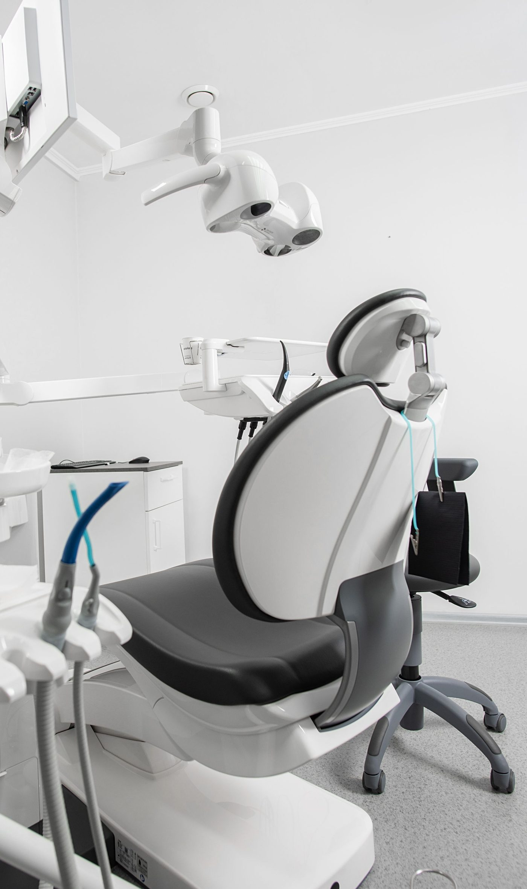
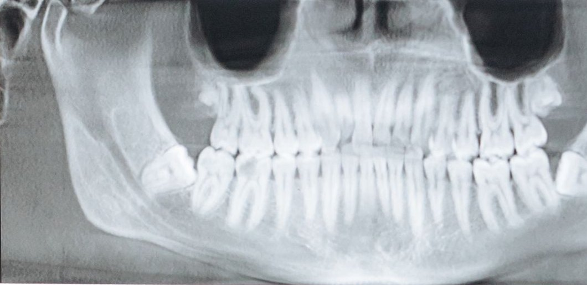
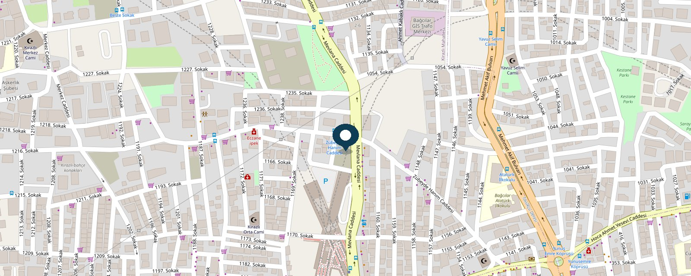
Kirazlı Mah. Mevlana Cad. No: 47 D Yol tarifiHarita: © OpenStreetMap katkıcıları
Merak ettikleriniz
Bir soruyu seçtiğinizde WhatsApp yazışması o soruyla başlar.
Telefonla görüşmeyi tercih ederseniz 0541 732 43 76 numarasından ulaşabilirsiniz.
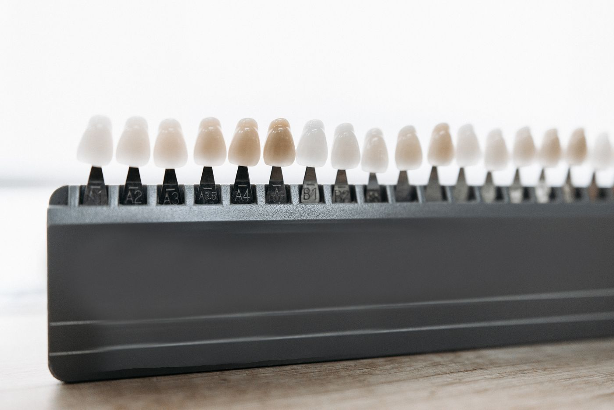
Tedavi alanları
Aşağıdaki alanların tamamında tedavi uygulanmaktadır. Durumunuza hangi tedavinin uygun olduğu, muayene sonrasında hekiminiz tarafından belirlenir.
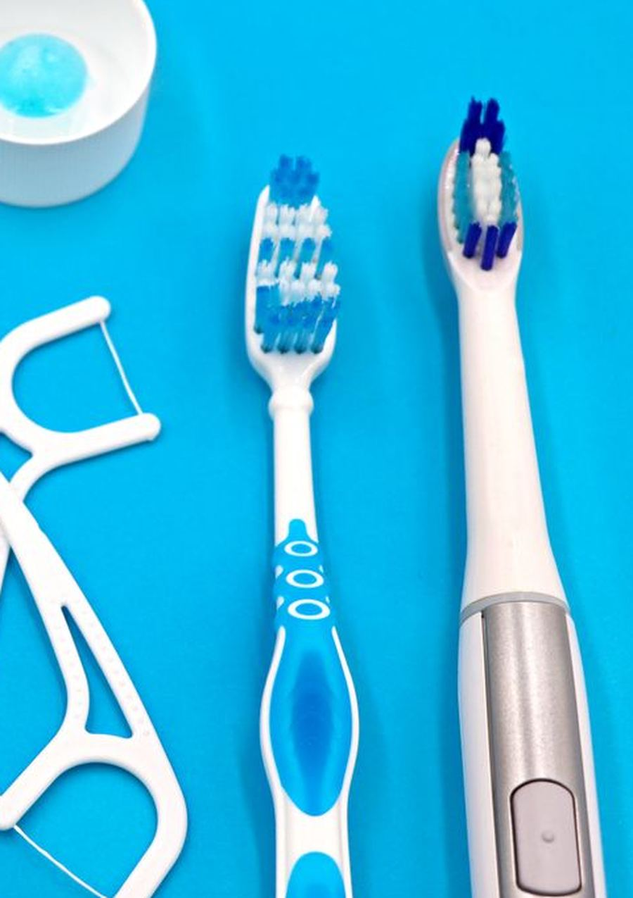
Genel Diş Tedavisi
Çürük dolgusu, diş taşı temizliği ve beyazlatma gibi koruyucu ve estetik uygulamalar.
Ayrıntılar
Çürük ve dolgu. Çürük, diş yüzeyindeki sert dokunun bakteri asitleriyle çözülmesiyle başlar. Erken dönemde belirti vermeyebilir; ilerledikçe soğuk-sıcak hassasiyeti, tatlıda sızlama ve sonrasında ağrı görülür. Çürümüş doku temizlendikten sonra boşluk dolgu maddesiyle kapatılır. Yüzeysel çürükler çoğunlukla tek seansta tamamlanır; derin çürüklerde diş özü etkilenmişse kanal tedavisi gündeme gelebilir.
Diş taşı temizliği. Fırçalamayla uzaklaştırılamayan plak zamanla sertleşerek diş taşına dönüşür ve dişeti iltihabına zemin hazırlar. Temizlik, ultrasonik uçlarla taşın kırılması ve yüzeyin cilalanmasından oluşur. İşlem sonrası birkaç gün süren hassasiyet olağandır.
Beyazlatma. Rengi değişmiş dişlerde uygulanabilen estetik bir işlemdir. Uygun olup olmadığı, renklenmenin nedenine ve dişeti sağlığına göre muayenede değerlendirilir. Elde edilen sonuç ve kalıcılığı kişiden kişiye değişir.
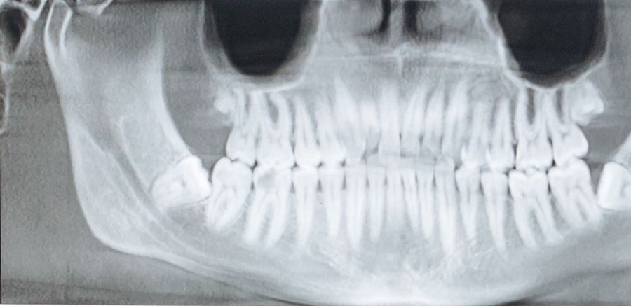
Kanal Tedavisi
Diş özüne ulaşan çürük ve iltihaplarda dişin çekilmeden korunmasına yönelik tedaviler.
Ayrıntılar
Ne zaman gerekir? Çürük ya da travma, dişin ortasındaki damar ve sinir dokusuna (pulpa) ulaştığında bu doku iltihaplanır. Tipik belirtiler: kendiliğinden başlayan ve geceleri artan zonklama, sıcakla şiddetlenen ağrı, dişe basınca duyulan rahatsızlık, bazen dişetinde şişlik. Amaç, dişi çekmek yerine yerinde tutmaktır.
Nasıl uygulanır? Bölge uyuşturulduktan sonra dişin içindeki iltihaplı doku temizlenir, kanallar şekillendirilip dezenfekte edilir ve sızdırmaz bir malzemeyle doldurulur. Kök sayısına ve iltihabın durumuna göre bir ya da birkaç seans sürebilir; arada dişe geçici dolgu konur.
Sonrası. İlk günlerde çiğnemede hafif hassasiyet olabilir, bu genellikle azalarak geçer. Kanal tedavisi görmüş dişler kırılmaya daha yatkın olduğundan çoğu durumda üzerine kaplama önerilir. Tedavinin başarısı dişin kalan sağlam doku miktarına göre değişir.
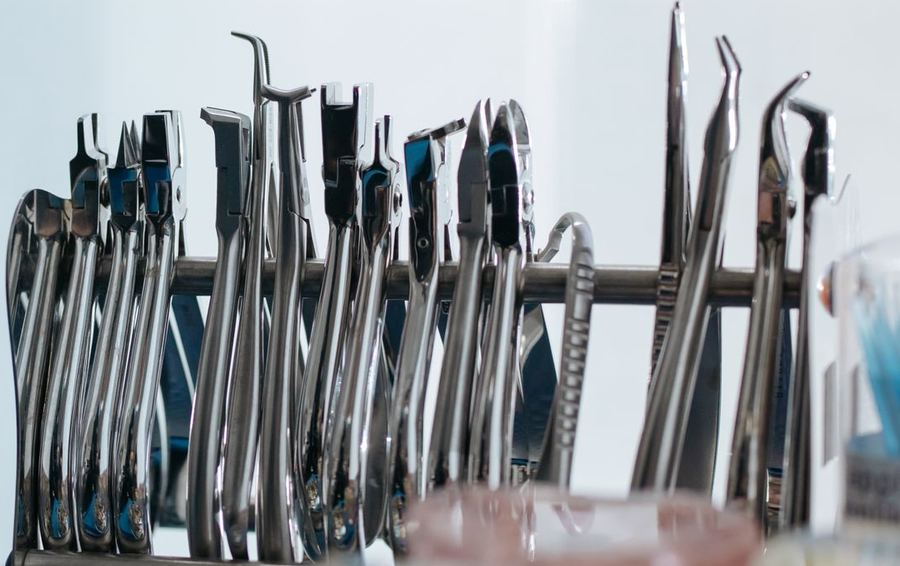
Ağız ve Diş Cerrahisi
Diş çekimi, gömülü diş operasyonları, implant ve ağız içi cerrahi girişimler.
Ayrıntılar
Diş çekimi. Kurtarılamayacak kadar harap olmuş, kırılmış ya da ileri derecede sallanan dişlerde gündeme gelir. Çekim, dişin korunmasının mümkün olmadığı durumlarda başvurulan son seçenektir; karar röntgen ve muayene sonrasında verilir.
Gömülü ve 20'lik dişler. Yirmi yaş dişleri çenede yer bulamadığında kısmen ya da tamamen gömülü kalabilir. Her gömülü diş çekilmez; ağrı, tekrarlayan dişeti iltihabı, komşu dişte çürük ya da kist oluşumu gibi bulgular varsa cerrahi çekim önerilir. İşlem lokal anestezi altında yapılır, gerekirse dikiş konur.
İmplant. Eksik dişin yerine çene kemiğine yerleştirilen titanyum vida, üzerine yapılacak protezin desteğini oluşturur. Uygunluk; kemik hacmi, dişeti sağlığı ve genel sağlık durumuna göre değerlendirilir. Kemiğin implantı sarması genellikle birkaç ay sürer, üst yapı bu süre sonunda tamamlanır. Kan sulandırıcı kullanıyorsanız ya da düzenli ilacınız varsa, işlemden önce mutlaka bildirin.
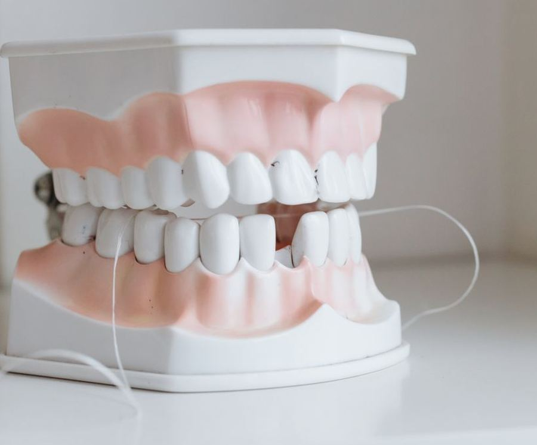
Protez ve Kaplama
Eksik ya da aşınmış dişlerin kaplama, köprü ve protezlerle yeniden kazandırılması.
Ayrıntılar
Kaplama. Aşırı madde kaybı olan, kırılmış ya da kanal tedavisi görmüş dişlerin üzerine geçirilen kılıftır. Dişin kalan dokusunu kırılmaya karşı korur ve çiğneme işlevini geri kazandırır. Diş hazırlandıktan sonra ölçü alınır; kalıcı kaplama hazırlanana kadar geçici kaplama takılır.
Köprü. Eksik bir dişin boşluğu, iki yanındaki dişlerden destek alınarak kapatılabilir. Komşu dişlerin sağlamlığı bu seçeneğin uygunluğunu belirler.
Hareketli protez. Çok sayıda diş eksik olduğunda ya da implant için uygun koşullar yoksa tam veya bölümlü protez uygulanır. Yeni protezle konuşma ve çiğnemeye alışmak birkaç hafta sürebilir; bu dönemde uyum düzeltmeleri için kontrole çağrılırsınız. Vurma ya da yara oluşursa protezi zorlamadan kliniğe başvurun.
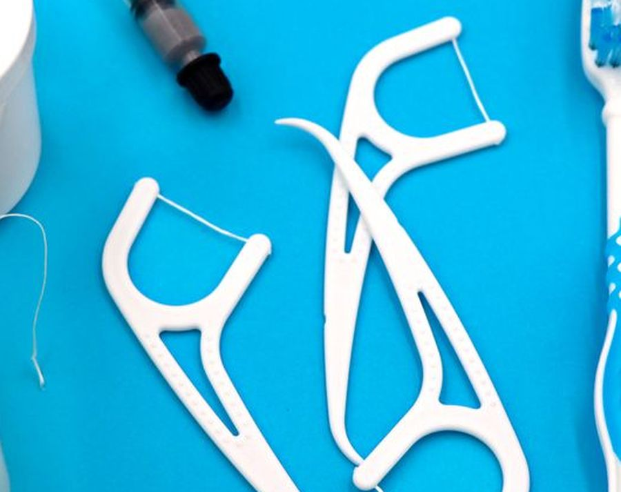
Dişeti Tedavisi
Dişeti kanaması, çekilmesi ve sallanan dişlere yönelik periodontal tedaviler.
Ayrıntılar
Belirtiler. Fırçalarken kanama, kızarıklık ve şişlik dişeti iltihabının erken işaretleridir. Bu aşamada tablo geri döndürülebilir. Tedavi edilmezse iltihap dişi çevreleyen kemiğe ilerler; dişeti çekilir, dişler hassaslaşır, ilerleyen dönemde sallanma başlar. Ağız kokusu da sık görülen bir bulgudur.
Tedavi. İlk aşama, diş taşı temizliği ve dişeti cebindeki iltihaplı dokunun uzaklaştırılmasıdır (detartraj ve kök yüzeyi düzleştirmesi). Bölge geniş ise birden fazla seansta yapılır. İlerlemiş durumlarda cerrahi girişim gerekebilir.
Sonuç neye bağlı? Dişeti tedavisinin kalıcılığı büyük ölçüde günlük bakıma ve düzenli kontrole bağlıdır. Kaybedilen kemik geri kazanılamaz; hedef, ilerlemeyi durdurmak ve mevcut dişleri korumaktır. Sigara kullanımı ve şeker hastalığı iyileşmeyi olumsuz etkiler.
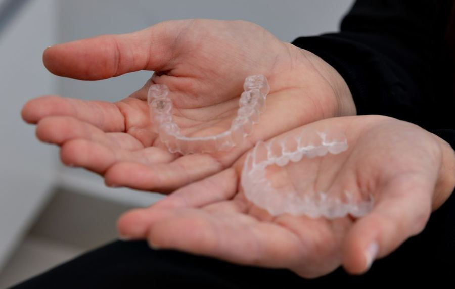
Ortodonti ve Çene Eklemi
Diş teli, şeffaf plak, gece plağı ve çene eklemi (TME) tedavileri.
Ayrıntılar
Diş teli ve şeffaf plak. Çapraşık dizilmiş dişler, kapanış bozuklukları ve dişler arası boşluklar ortodontik tedaviyle düzeltilebilir. Hangi yöntemin uygun olduğu; bozukluğun türüne, yaşa ve çene gelişimine göre değişir. Tedavi süresi olgudan olguya farklılık gösterir ve düzenli kontrollere devam edilmesini gerektirir.
Gece plağı. Diş sıkma ve gıcırdatma (bruksizm) dişlerde aşınma, kırık ve sabah çene yorgunluğuna yol açar. Ölçüye göre hazırlanan gece plağı, dişleri birbirine karşı korur ve eklem üzerindeki yükü azaltır.
Çene eklemi (TME). Ağız açarken ses gelmesi, çenenin takılması, kulak önünde ağrı ya da ağzı tam açamama çene eklemi kaynaklı olabilir. Muayene ve gerekirse görüntüleme sonrası; plak tedavisi, egzersiz ve alışkanlık düzenlemesi gibi seçenekler değerlendirilir. Ağzınız açık kalıp kapanmıyorsa bu acil bir durumdur, hemen arayın.
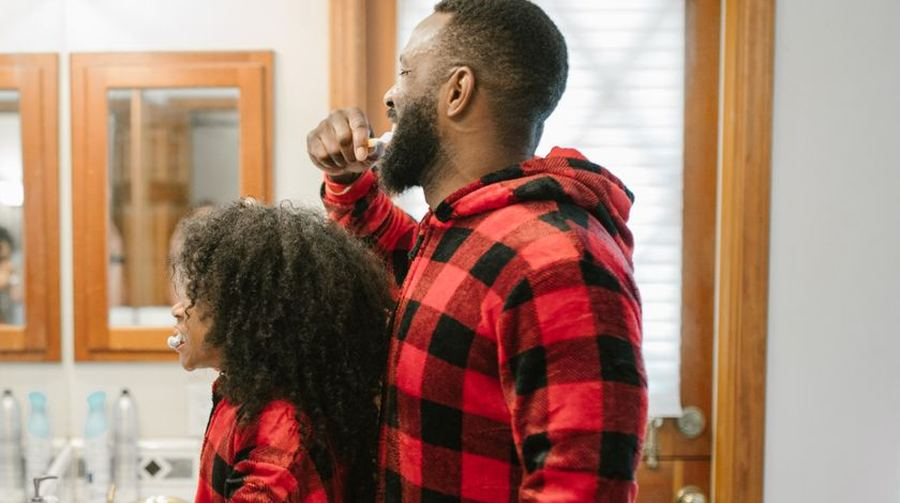
Çocuk Diş Hekimliği
Süt dişi tedavileri ve çürüğü önlemeye yönelik koruyucu uygulamalar.
Ayrıntılar
İlk muayene. İlk diş çıktıktan sonra, en geç bir yaş civarında bir kontrol önerilir. Erken tanışma, çocuğun kliniğe alışmasını kolaylaştırır ve çürük başlamadan önlem alınmasını sağlar.
Süt dişleri neden önemli? Süt dişleri çiğnemenin yanı sıra kalıcı dişlere yer tutar ve konuşmanın gelişimine katkıda bulunur. Erken kaybedilen süt dişi, sonradan gelen dişin yanlış konumda çıkmasına yol açabilir. Bu nedenle "nasılsa düşecek" diye bırakılmaz.
Koruyucu uygulamalar. Florür uygulaması ve çürüğe yatkın azı dişlerinin çukurlarının kapatılması (fissür örtücü), çürük riskini azaltmaya yönelik işlemlerdir.
Çocuğun uyumu. Çocuk hastalarda işlem, çocuğun o günkü uyumuna bağlıdır. İlk randevuda yalnızca tanışma ve muayene yapılabilir, tedavi sonraki seansa bırakılabilir. Bunu bir aksama olarak görmüyoruz; zorlamak yerine güven kurmayı tercih ediyoruz.
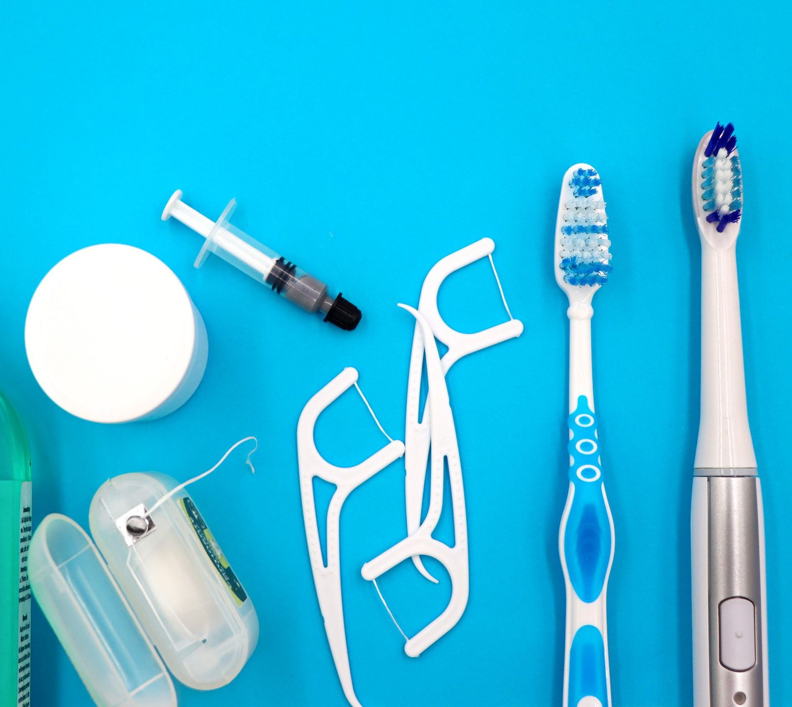
Bize ulaştığınızda
Telefonu, klinikte o an görevli olan ekibimiz yanıtlar. Şikâyetinizi dinler; hemen gelmenizin gerekip gerekmediğini, gerekiyorsa sizi hangi saatte bekleyeceğimizi bildiririz. Geç saatlerde de aynı şekilde ulaşabilirsiniz.
Yola çıkmadan önce yazın. WhatsApp hattımız gece dahil her saat yanıt verir. Şikâyetinizi birkaç kelimeyle iletmeniz yeterli; karşılık almadan yola çıkmanıza gerek kalmaz. Boşuna yol gelmemeniz bizim için de önemli.
Muayene öncesinde merak ettiklerinizi telefonla da iletebilirsiniz.
Sık sorulan sorular
Hastalarımızın en çok sorduğu konuları derledik. Aradığınızı bulamazsanız telefonla ya da WhatsApp üzerinden sorabilirsiniz.
Gece diş ağrım var, şu anda gelebilir miyim?
Evet. Klinik her gün 24 saat açıktır; gece ve hafta sonu dahil hizmet veriyoruz. Gelmeden önce 0541 732 43 76 numarasını aramanızı öneririz: şikâyetinizi dinleyip hemen gelmenizin gerekip gerekmediğini söyleyebilir, sizi hangi saatte bekleyeceğimizi bildirebiliriz.
Randevusuz gelebilir miyim?
Gelebilirsiniz. Ancak o sırada başka bir hasta tedavide olabileceği için beklemeniz gerekebilir. Önceden aramanız ya da WhatsApp'tan yazmanız hem bekleme süresini kısaltır hem de acil bir durumsa size öncelik vermemizi sağlar.
Gerçekten 24 saat açık mısınız?
Evet, klinik hafta içi, hafta sonu ve resmî tatiller dahil her gün 24 saat açıktır. Gece saatlerinde de telefonu klinikte görevli ekip yanıtlar. Gece gelen hastalarda öncelik ağrının giderilmesi ve durumun kontrol altına alınmasıdır; uzun sürecek planlı işlemler için gündüz bir randevu verilebilir.
Gece aradığımda gerçekten ulaşabiliyor muyum?
Bunu sormakta haklısınız. En kolay doğrulama yolu: yola çıkmadan önce yazın. WhatsApp hattımız gece dahil her saat yanıt verir; mesajınıza karşılık alamadan yola çıkmanıza gerek kalmaz. Telefonu da klinikte o an görevli olan ekip açar.
Boşuna yol gelmemeniz bizim için de önemli. Şikâyetinizi yazın; hemen gelmeniz mi gerekiyor, yoksa sabahı beklemek mi daha doğru, açıkça söyleriz.
Gece ya da hafta sonu geldiğimde işleyiş değişir mi?
Hayır. Gece, hafta sonu ya da resmî tatilde gelmeniz uygulanan işlemlerde bir farklılık oluşturmaz; geç saatte geldiniz diye farklı bir uygulamaya tabi tutulmazsınız.
Yapılan her işlem kaydınıza işlenir ve fatura düzenlenir. Muayeneden sonra, size hangi işlemin neden önerildiği anlatılır; onayınız olmadan işleme geçilmez.
Diş hekiminden çok korkuyorum, ne yapabilirim?
Bunu bize söylemeniz yeterli. Korku diş hekimliğinde çok yaygındır ve utanılacak bir şey değildir. Ne yapacağımızı önceden anlatır, aceleye getirmeyiz; rahatsız olduğunuzda durmamız için bir işaret belirleyebiliriz. İlk randevuda yalnızca muayene yapıp tedaviyi sonraya bırakmak da bir seçenektir.
Çocuk hastalara bakıyor musunuz? Kaç yaşından itibaren?
Evet. İlk diş çıktıktan sonra, en geç bir yaş civarında ilk kontrolü öneriyoruz. Çocuk hastalarda yapılacak işlem çocuğun o günkü uyumuna bağlıdır: ilk randevu yalnızca tanışma ve muayeneyle geçebilir, tedavi sonraki seansa bırakılabilir. Zorlamak yerine güven kurmayı tercih ediyoruz.
Kanal tedavisi ağrılı mıdır?
İşlem lokal anestezi altında yapılır. Tedavi sırasında basınç veya rahatsızlık hissedilebilir; ağrı hissederseniz hekiminize bildirmeniz gerekir ve anestezi yeniden değerlendirilir. İşlem sonrasında birkaç gün çiğneme hassasiyeti olabilir; artan veya geçmeyen ağrıda kliniği arayın.
20 yaş dişimin mutlaka çekilmesi gerekir mi?
Hayır, her yirmi yaş dişi çekilmez. Ağızda düzgün konumlanmış ve sorun çıkarmayan bir diş yerinde bırakılabilir. Çekim; tekrarlayan ağrı ve dişeti iltihabı, komşu dişte çürük ya da kök erimesi, kist oluşumu gibi bulgular varsa gündeme gelir. Karar, muayene ve röntgen sonrasında verilir.
İmplant tedavisi ne kadar sürer?
İmplantın yerleştirilmesi tek seanslık bir işlemdir. Ardından çene kemiğinin implantı sarması için bir iyileşme süresi gerekir; bu genellikle birkaç ay sürer ve kişiden kişiye değişir. Üst yapı (kaplama) bu süre tamamlandıktan sonra yapılır. Toplam süre; kemik durumu, ek işlem gerekip gerekmediği ve iyileşme hızına göre farklılık gösterir.
Diş taşı temizliği dişlere zarar verir, dişleri aşındırır mı?
Hayır. Temizlik, diş yüzeyindeki sertleşmiş plağı uzaklaştırır; dişin kendi dokusunu kazımaz. İşlemden sonra birkaç gün süren soğuk-sıcak hassasiyeti olağandır ve geçicidir. Dişlerin arasında boşluk hissi oluşması, taşın daha önce doldurduğu alanın açığa çıkmasındandır.
Hamileyken diş tedavisi olabilir miyim?
Hamilelikte diş tedavisi yapılabilir; hatta dişeti sorunları bu dönemde arttığı için kontrol önemlidir. Randevu alırken hamile olduğunuzu ve kaçıncı ayda olduğunuzu mutlaka belirtin. Planlanabilir işlemler için genellikle ikinci üç aylık dönem tercih edilir. Ağrı ve iltihap gibi durumlar ise beklemeye alınmaz; gebeliğe uygun şekilde ele alınır.
Kan sulandırıcı veya düzenli ilaç kullanıyorum, söylemeli miyim?
Mutlaka söyleyin. Kan sulandırıcılar, kemik ilaçları, şeker ve tansiyon ilaçları başta olmak üzere kullandığınız tüm ilaçları ve bilinen hastalıklarınızı işlemden önce bildirin. İlacınızı kendi kararınızla bırakmayın ya da dozunu değiştirmeyin — gerekiyorsa bu, ilacı yazan hekimle görüşülerek planlanır.
Dişim kırıldı ya da yerinden çıktı, ne yapmalıyım?
Vakit önemlidir, hemen arayın. Diş tamamen yerinden çıktıysa dişi kök kısmından değil üst (taç) kısmından tutun. Kirliyse yalnızca hafifçe durulayın, ovalamayın ve kazımayın. Dişi kuru bırakmayın: mümkünse bir bardak süt içinde, yoksa ağzınızda yanağınızın içinde saklayarak en kısa sürede kliniğe gelin. Kanama varsa temiz bir gazlı bezle bastırın.
Kliniğe nasıl ulaşabilirim?
Adresimiz Kirazlı Mah. Mevlana Cad. No: 47 D, Bağcılar / İstanbul. Kirazlı metro istasyonuna yürüme mesafesindeyiz; istasyon M1B ve M3 hatlarının aktarma noktasıdır. Mevlana Caddesi üzerinde olduğumuz için otobüs ve minibüs duraklarından da kolayca gelinir. Yol tarifi için sayfadaki harita bağlantısını kullanabilirsiniz.
Hekimlerimiz
Kliniğimizde tedavilerinizi yürüten hekimler. Muayeneniz sırasında size hangi hekimin baktığını her zaman sorabilirsiniz.
Genel diş hekimliği alanında çalışmaktadır; kliniğimizde uygulanan tedavilerin tamamını yürütmektedir.
Genel diş hekimliği alanında çalışmaktadır; kliniğimizde uygulanan tedavilerin tamamını yürütmektedir.
Bilgi yazıları
Hastalarımızın en çok karşılaştığı durumlar için hazırladığımız bilgilendirme yazıları. Şikâyetiniz varsa yine de muayene gereklidir; bu yazılar hekim muayenesinin yerine geçmez.
Ulaşım
Kirazlı Mah. Mevlana Cad. No: 47 D — Bağcılar / İstanbul. Kirazlı metro istasyonuna yürüme mesafesindeyiz.
Metroyla
Kirazlı istasyonunda inin. İstasyon, M1B (Yenikapı–Kirazlı) ve M3 hatlarının aktarma noktasıdır; şehrin iki yakasından da aktarmayla ulaşılabilir.
İstasyondan çıkıp Mevlana Caddesi boyunca yürüyerek kısa sürede kliniğe varırsınız.
Otobüs ve minibüsle
Klinik Mevlana Caddesi üzerindedir; cadde üzerinden geçen otobüs ve minibüs hatlarının duraklarından yürüme mesafesindedir.
Sürücüye "Kirazlı, Mevlana Caddesi" derseniz en yakın durakta inebilirsiniz.
Çevre mahalleler
Kirazlı, Yıldıztepe, Barbaros, Demirkapı, Hürriyet, Merkez, Güneşli ve Mahmutbey başta olmak üzere Bağcılar'ın tüm mahallelerinden kısa sürede ulaşılabilir.
Komşu ilçelerden Güngören, Esenler, Bahçelievler ve Küçükçekmece yönünden gelen hastalarımız da bulunmaktadır.
İletişim
Google Haritalar’da görüntüle